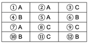
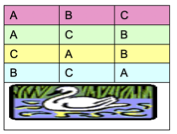
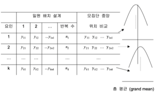
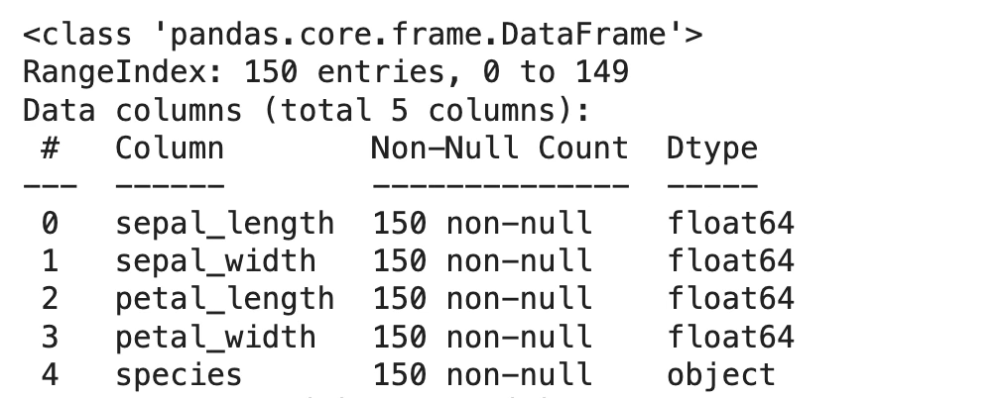
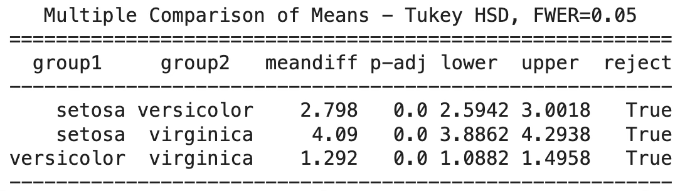
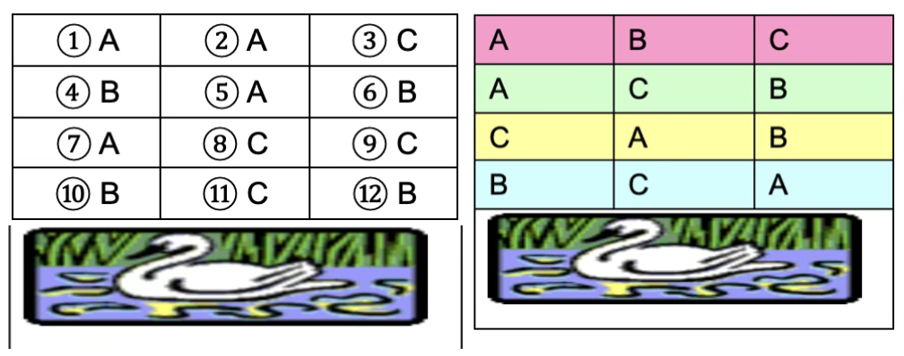

기초통계 8. 분산분석
chapter 1. 실험설계 기초
1. 개념
실험 설계는 기록된 반응을 바탕으로 치료나 집단 간 비교가 가능하도록 연구의 틀을 마련하는 과정이다. 연구는 자연 상태에서의 관찰처럼 환경을 방해하지 않고 수행될 수도 있고, 실험실처럼 요인을 인위적으로 통제하는 방식으로 이루어질 수도 있다.
예를 들어, 학교 유형별 2학년 읽기 점수 차이는 자연 관찰 연구에 해당하지만, 온도와 습도가 진드기 수명 주기에 미치는 영향은 통제가 가능한 실험실에서 연구된다. 통제는 특정 요인의 효과를 명확히 파악하는 데 도움이 되지만, 지나치게 인위적이면 실제 자연 상태를 반영하는 정도가 떨어진다. 따라서 실험의 유용성을 위해서는 조건 통제와 현실성 사이의 균형이 필요하다.
실험설계는 데이터를 어떻게 만들지에 관한 단계이고, 분산분석(ANOVA)은 만들어진 데이터를 어떻게 해석할지에 관한 단계다. 즉, 실험설계에서 처리(treatment) 구조, 반복(replication), 무작위화(randomization), 블록화(blocking) 같은 요소를 미리 결정하면, 그 결과 데이터는 분산분석 모형에 자연스럽게 들어갈 수 있는 형태로 구성된다. 예를 들어, 요인별 수준과 배치 방법이 명확히 설계되어 있으면, ANOVA에서는 요인별 제곱합(SS)을 나누어 변동의 원인을 추적할 수 있다.
2. 실험설계 용어
절대실험과 비교실험
절대실험은 관심 있는 대상의 현재 상태나 특성을 파악하기 위해 요인을 조작하지 않고 관찰이나 조사를 통해 정보를 얻는 방식이다. 예를 들어, 3G 서비스에 대한 고객 만족도를 조사하는 경우가 이에 해당한다. 이러한 실험은 원인과 결과의 관계를 직접적으로 검증하기보다는, 현재 나타나고 있는 현상을 기술하는 데 초점을 둔다.
반면 비교실험은 관심 있는 현상에 영향을 미칠 수 있는 요인을 변화시키고, 그에 따른 반응의 변화를 분석하는 실험이다. 예를 들어, 기존 마케팅 전략과 새로 개발한 마케팅 전략을 각각 적용하여 매출이나 고객 반응의 차이를 비교하는 방식이다. 이 경우 요인의 효과를 통계적으로 검정할 수 있으며, 분산분석(ANOVA)은 이러한 비교실험을 분석하는 대표적인 방법이다.
설계된 실험(designed experiment)
여기서는 일반적인 단어 사용과, 우리가 실험 설계 구조에서 부여하는 의미를 구분하고자 한다. 간단히 말해, 설계된 실험이란 미리 정해진 틀 안에서 집단을 관찰·측정·평가하는 연구를 뜻한다. 이때 관찰·측정은 특정한 반응(결과 변수)에 대해 이루어진다. 연구자는 실험 중 해당 틀의 요소들을 통제하여, 관심 있는 집단 간에 타당한 비교가 가능하도록 데이터를 수집한다. 이러한 통제를 통해 통계적 추론이 가능해진다.
요인(factors)
물고기 사료 (기존 사료A, 새로 개발된 사료=B)와 수온 온도(20도, 25도)에 따른 몸무게 증가 효과를 보기 위하여 어항 4개(성장 환경 동일), 물고기 12마리(몸무게 유사, 성장 속도 유사)를 랜덤하게 선택하여, 각 어항에 3마리 물고기 배정 후, (사료x온도) 어항 넣은 후 2주 후에 몸무게를 측정하였다.
사료 종류 – A-기존사료, B-새로운 사료 (2수준)
수온 – 20도, 25도 (2수준)
사료 종류와 수온은 연구자가 통제하는 요인이다. 반응변수는 물고기 몸무게(g)이며, 이는 측정값(measurement)으로 기록되지만 연구자가 통제하지는 않는다.
처리(treatments) 및 설계 형태
처리는 요인의 수준을 조합하여 구성된다. 위 실험에서는 2수준(tk료) × 2수준(수온) = 4개의 처리가 가능하며, 설계형태는 다음과 같이 정리된다.
만약 요인이 하나만 있다면, 예를 들어 비료 종류만 비교한다면, 이는 일원배치(one-way classification)이다.
두 요인을 모두 고려하면 요인배치 설계(factorial treatment design)가 되며, 분산분석(ANOVA)을 통해 비료 효과, 관개 효과, 그리고 두 요인의 상호작용 효과까지 평가할 수 있다.
대조 처리(control treatment)
대조 처리는 다른 처리들의 효과를 비교하는 기준이 되는 특별한 처리 유형이다. 대조 처리가 특히 중요한 경우는 세 가지다.
첫째, 실험 조건이 일반적으로 효과적인 처리라도 그 효과를 보여주기 어렵게 만드는 경우이다. 이때, 아무 처리를 하지 않는 대조 처리를 포함하면, 실험 조건이 처리 간 효과 차이를 드러내지 못한다는 점을 보여줄 수 있다. 예를 들어, 토마토 재배 실험에서 토양 비옥도가 이미 매우 높다면, 질소 비료를 추가해도 모든 수준이 비슷하게 보일 수 있다. 그러나 ’질소를 전혀 주지 않는’ 대조 처리를 포함하면, 토양 자체의 높은 비옥도가 드러나고, 대조 처리의 효과가 질소 처리와 비슷하다는 점이 확인될 수 있다.
둘째, 기존에 잘 확립된 표준 방법과 새로운 방법들을 비교하는 경우다. 여러 새로운 절차가 제안될 때, 기존 표준 처리를 대조군으로 두어 비교한다.
셋째, 플라세보(placebo) 대조다. 이는 피실험자가 실험 중 단순히 처치 과정을 받는 것만으로 반응을 보일 수 있는 경우에 사용된다. 예를 들어, 환자가 의사를 만나 치료를 처방받는 것만으로 통증이 일시적으로 감소할 수 있다. 이 경우, 활성 성분이 없는 가짜 약(플라세보)을 환자에게 알리지 않고 투여하여, 활성 성분이 있는 실제 치료와 비교함으로써 그 진짜 효과를 평가할 수 있다.
실험 단위(experimental unit)
실험 단위는 처리를 무작위로 할당받는 물리적 개체, 혹은 처리 집단 중 하나에서 무작위로 선택된 실험 대상이다. 예를 들어, 물고기 몸무게 실험에서는 “어항” 가 실험 단위이다.
다른 예로, 연구자가 실험실 쥐에게 신약의 다양한 용량(처리 수준)을 시험한다고 하자. 각 쥐에게 무작위로 한 번의 약물 투여를 할당하면, 각 쥐가 실험 단위가 된다.
반복(replication)
처리가 한 실험 단위에 할당되면 이를 해당 처리의 한 번의 반복이라고 한다. 일반적으로는 각 처리를 여러 실험 단위에 무작위로 배정하여, 각 처리에 대해 여러 번의 반복을 수행한다. 이렇게 하면 특정 처리에 대한 여러 개의 독립 관측값을 확보할 수 있다.
측정 단위(measurement unit)
실험 단위(experimental unit)와 구별되는 개념으로, 측정 단위는 실제로 측정을 수행하는 물리적 개체를 말한다. 예를 들어, 물고기 몸무게 실험에서는 “물고기” 가 측정 단위이다. 그러나, 대부분의 실험에서는 실험 단위와 측정 단위가 동일하다.
실험 오차(experimental error)
실험 오차란, 동일한 처리를 받고 동일한 실험 조건에서 관측된 실험 단위들 간 반응의 변동을 말한다. 실험 오차가 0이 되지 않는 이유에는 다음이 포함된다.
(a) 처리를 받기 전부터 존재하는 실험 단위 간의 자연적인 차이
(b) 측정 장치의 변동(측정 기기 오차)
(c) 처리 조건을 설정하는 과정에서의 변동
(d) 처리 요인이 아닌 외부 요인들이 반응 변수에 미치는 영향
즉, 실험 오차는 의도한 요인 외에 존재하는 모든 변동이며, 분산분석에서 오차항(Residual, Error MS)로 나타나게 됩니다.
실험 오차의 분산(variance of experimental error)
연구 가설을 검정하고 처리 집단 평균의 함수에 대한 신뢰구간을 만들기 위해서는, 실험 오차 분산의 추정값이 필요하다. 실험설계, 처리 설계, 반복(replication) 횟수는 모두 이 추정에 영향을 준다.
가장 기본적인 실험(단일 요인, t개의 수준, 실험 단위와 측정 단위가 동일)에서는, 동일한 처리를 받은 실험 단위들 간 반응값의 풀링된 분산(pooled variance)이 실험 오차 분산의 추정값이 된다.
예를 들어, 쥐를 대상으로 약물 농도 실험을 할 때, 네 가지 처리(농도 수준)에 각각 10마리의 쥐를 무작위 배정했다고 하자. 각 농도 수준에서 10마리 쥐의 혈중 농도 반응값 분산을 계산하고, 네 수준의 분산을 합쳐서 하나의 풀링된 분산 추정값을 얻는다. 이 값이 실험 오차 분산의 추정치가 된다.
대조군과 통제군
통제집단은 비교의 기준이 되는 집단으로, 예를 들어 기존 사료 A를 먹인 물고기 집단이 이에 해당한다. 반면 실험집단은 새로운 처리를 적용하는 집단으로, 새로 개발된 사료 B를 먹인 물고기 집단이 여기에 해당한다. 이렇게 두 집단을 설정하면, 동일한 조건에서 사료 종류만 달리했을 때 몸무게 변화가 어떻게 다른지 비교할 수 있다.
또한 실험 설계에서 사전·사후 검정의 목적에 따라 분석 방법이 달라진다. 만약 개별 물고기의 실험 전과 후 몸무게 차이에 관심이 있다면, 동일 개체를 두 번 측정하므로 짝진 표본 검정을 사용한다. 그러나 실험의 주된 목적이 사료의 효과를 비교하는 것이라면, 실험 전 측정한 몸무게는 주효과가 아니라 공변량(covariate)으로 처리하여, 사료 이외의 사전 차이를 통계적으로 제거한 뒤 순수한 사료 효과를 추정하는 것이 적절하다.
Placebo 효과
플라세보 효과는 실제로 치료 성분이 없거나 효과가 없는 처치를 받았음에도 불구하고, 환자가 치료를 받았다고 믿기 때문에 증상이 호전되는 현상을 말한다. 예를 들어, 과거 위염 치료에서 인공적으로 가스를 주입했을 때, 환자들이 통증이 완화된 것처럼 느껴 한동안 내과에서 사용된 사례가 있다. 이는 실제 약리 효과가 아니라, ”치료를 받았다”는 믿음에서 비롯된 심리적·생리적 반응이다. 노인 환자들이 병원을 자주 찾는 이유 중에도 이와 유사한 측면이 있는데, 이는 의사와 상담을 하고 처치를 받았다는 사실만으로도 병이 나아진다고 느끼기 때문이다.
이러한 플라세보 효과를 배제하기 위해 블라인드(blind) 실험을 실시한다. 블라인드 실험에서는 환자가 위약(placebo)과 실제 치료약을 구별하지 못하도록 하여, 심리적 기대 효과를 최소화한다. 그러나 실험자가 어느 환자가 어떤 처치를 받았는지 알고 있다면, 실험자의 무의식적 행동이나 태도가 환자 반응에 영향을 줄 수 있다. 이를 방지하기 위해 이중 블라인드(double blind) 실험을 적용하는데, 이 방법에서는 환자와 실험자 모두 위약과 치료약을 구별할 수 없도록 하여 보다 객관적인 효과 검증이 가능하게 한다.
3. 실험오차 제어
앞에서 살펴본 것처럼, 실험 오차는 여러 잠재적 원인에서 발생할 수 있다. 실험 오차의 분산이 크면 추론의 정밀성이 크게 떨어진다. 처리 평균의 추정치는 표준편차가 커지고, 그 결과 신뢰구간이 넓어져 추정이 부정확해진다. 또한 가설검정에서 제2종 오류(Type II error)의 가능성이 커진다. 따라서 실험 오차를 줄이는 모든 기법은 더 나은 실험과 더 정밀한 추론으로 이어진다.
연구자는 실험 오차의 많은 잠재적 원인을 통제할 수 있다. 주요 원인으로는
실험이 수행되는 절차
실험 단위와 측정 단위의 선택
측정이 이루어지고 기록되는 절차
실험 단위의 블록화(blocking)
실험 설계 유형
공변량(covariates)의 사용
실험 절차
실험 절차가 세심하고 일관되게 이루어지지 않으면 반응변수의 분산이 커지고, 경우에 따라 처리 평균 추정에 편향이 생길 수 있다. 이를 방지하려면 실험 인력에 대한 충분한 훈련, 예산 범위 내 정밀 장비 사용, 장비의 주기적 유지·보정, 그리고 실험 조건의 일정한 유지가 필수적이다.
실험 단위와 측정단위
실험 단위가 반응변수에 영향을 줄 수 있는 특성에서 서로 비슷하지 않으면, 실험 오차 분산이 커진다. 연구의 주요 목적 중 하나는 서로 다른 처리를 받은 실험 단위들의 평균 반응 차이를 확인하는 것이다. 이를 위해 연구자는 관심 있는 실험 단위의 모집단을 정하고, 그 모집단에서 실험 단위를 무작위로 뽑아 처리를 무작위로 배정하는 것이 이상적이다.
블록화를 통한 실험오차 줄이기
블록화(blocking)은 실험 단위 집단 내에서 중요한 특성 차이가 클 때, 실험 오차 분산을 줄이는 데 효과적인 방법이다. 반응변수에 영향을 줄 수 있는 특성에 따라 실험 단위를 비슷한 것끼리 묶어 블록을 만들면, 각 블록 내부는 균질해지고 전체적으로는 다양한 특성을 포함할 수 있다. 이후 각 블록 안에서 처리를 무작위로 배정하여, 블록 내 비교를 통해 큰 차이로 인한 변동이 처리 효과 분석을 가리지 않게 한다. 이 과정에서 블록화 기준이 된 특성에 의한 변동은 실험 오차에서 분리된다.
블록화 기준은 다양하다. 예를 들어, 피험자의 나이·체중·성별·건강상태·교육 수준과 같은 신체적 특성, 쌍둥이나 같은 배에서 태어난 동물처럼 관련 있는 개체, 인접 토지나 실험대 위 식물 위치 같은 공간적 위치, 요일처럼 실험 시점(환경이 날마다 달라질 수 있음), 그리고 측정·조작 방식에 차이가 있을 수 있는 실험자 등이 있다.
중요한 점은, 각 블록화 기준의 모든 수준에서 모든 처리를 관찰하려는 것이다. 예를 들어, 세 개의 조립 라인에서 발생하는 주요 결함 차량 수를 비교하는 연구라면, 요일을 블록화 변수로 삼아 주 5일 동안 모든 조립 라인을 비교하도록 설계해야 한다.
공변량을 이용한 변동성 줄이기
공변량(covariate)은 반응변수와 관련이 있는 변수로, 실험 오차의 변동을 줄이는 데 활용된다. 실험 단위의 물리적 특성을 기준으로 균질한 블록을 만드는 블록화와 달리, 공변량은 해당 특성을 연속형 변수 그대로 모델에 포함하여 처리 효과를 비교할 때 반응변수를 보정한다.
예를 들어, 새로운 식이요법과 대조 식이요법의 체중 감량 효과를 비교하는 개 실험에서 개의 나이가 112세로 다양하다면, 블록화는 이를 3세 미만, 38세, 8세 초과의 세 그룹으로 나누어 분석한다. 반면 공변량 기법은 개의 나이를 정확히 기록한 뒤, 처리 효과 분석 시 나이에 따른 영향을 통계적으로 제거한 상태에서 식이요법 효과를 비교한다. 이렇게 하면 연령 차이에 의한 불필요한 변동이 줄어, 더 정밀한 비교가 가능하다.
공변량이 되기 위해서는 세 가지 조건을 만족해야 한다. 첫째, 반응변수와 관계가 있어야 하고, 둘째, 측정이 가능해야 하며, 셋째, 처리에 의해 영향을 받지 않아야 한다. 대부분의 경우 공변량은 처리를 적용하기 전에 실험 단위에서 측정한다. 예로는 토양 비옥도, 원자재 불순물 함량, 실험 단위의 초기 무게, 학생의 SAT 점수, 대상자의 콜레스테롤 수치, 포장 내 곤충 밀도 등이 있다.
4. 랜덤화와 블록화
(1) 랜덤화(실험단위에 처리배치)
앞 절에서 논의했듯이, 통계 절차는 실험에서 얻은 데이터가 정규분포를 따르는 반응값 모집단에서 추출한 무작위 표본과 동등하다는 조건을 전제로 한다. 만약 실험이 사전에 정의된 처리 집단에서 실험 단위를 무작위로 선택하는 방식이라면, 이 조건이 타당한지를 실제로 확인할 수 있다. 그러나 특정 기준을 충족하는 실험 단위를 선정하거나, 농업 시험장의 토지 구획처럼 이미 주어진 실험 단위를 사용하는 경우에는 이러한 반응값이 특정 모집단의 무작위 표본이라는 가정이 다소 의문스러울 수 있다.
랜덤화는 실험 단위의 배정과 실험 수행 순서를 무작위로 결정하여 실험의 객관성을 보장하는 절차이다. 완전임의배치법(CRD)에서는 이러한 랜덤화를 통해 관심 요인 이외의 기타 원인들이 실험 결과에 영향을 주는 가능성을 최소화한다. 특히, 시간의 흐름에 따라 변할 수 있는 인자나 경향이 있다면, 실험을 서로 다른 시간대에 균등하게 배치함으로써 이러한 시간 효과를 약화시킬 수 있다. 이를 통해 실험 결과가 특정 시점이나 조건에 치우치지 않도록 하여, 처리 효과를 보다 정확하게 추정할 수 있다.
비료 종류(A, B, C)에 따른 벼 수확량의 차이를 알아보기 위하여 실험을 한다고 하자. 반복 수는 각 비료에 대해 4번을 한다면 실험을 위해 총 12곳의 경작지가 필요하다. 12 경작지가 땅의 비옥도가 동일하다면 CRD 방법을 이용하여 실험하면 된다. 난수표를 이용하여 임의로 비료를 배정할 수도 있지만 총 실험 수가 많지 않으므로 12 장의 종이에 각 번호를 적고 던진 후 하나씩 선택하여 실험을 배정하면 된다. 만약 1, 5, 2, 7, 12, 10 …, 3 순으로 선택하였다면 다음과 같다.

(2) 블록화
블록화는 실험 단위를 무작위로 배정하기 어려운 상황에서 실험의 정밀도를 높이기 위해 사용하는 방법이다. 성질이 유사한 단위들을 묶어 블록을 구성하면, 각 블록 내부에서는 실험 환경이 균일하게 유지되어 처리 효과를 보다 정확하게 비교할 수 있다. 이를 위해 실험 전체를 시간적 또는 공간적으로 나누어 블록을 설정하며, 블록은 실험 계획 단계에서 또 다른 독립변수(요인)로 간주한다. 예를 들어, 실험이 이틀에 걸쳐 수행된다면, 실험 날짜 자체가 블록 요인이 되어 각 날짜 내에서 처리 배정을 수행하게 된다.
만약 경작지 아래 개천이 흐른다면 물로부터 거리에 따라 땅의 비옥도의 차이는 있을 것이므로 CRD 방법은 적합하지 않다. 물의 위치에 따라 경작지를 나누고(블록화:block) 각 블록 내에서 각 비료를 하나씩 임의(randomized)로 배정하는 실험 계획을 실시하면 된다. 이를 Randomized Block Design이라 한다. 행이 (물에서 먼 정도) 블록이 되는 RBD 설계의 예이다.

5. 반복(replication)과 반복 측정(repetition)
반복은 동일한 처리를 서로 다른 독립적인 실험 단위에 적용하는 것을 의미한다. 이렇게 하면 실험 조건을 처음부터 다시 세팅하여 처리 효과를 여러 번 관찰할 수 있으므로, 실험 오차를 추정하고 결과의 재현성을 검증할 수 있다. 또한 표본 수가 늘어나 통계적 검정력이 향상되며, 분산분석에서는 오차항 계산에 직접 활용된다. 예를 들어, 사료 A를 주는 어항을 5개 두고 각각에서 물고기의 성장률을 측정하는 경우가 반복에 해당한다.
반복측정은 동일한 실험 단위에서 동일한 조건으로 여러 번 측정하거나 관찰하는 것을 말한다. 이는 측정 과정에서 발생하는 변동을 줄이고 정밀도를 높이기 위한 방법이다. 같은 실험 단위에서 얻은 값은 통계적으로 독립이 아니므로 실험 오차 추정에 직접 사용되지는 않으며, 보통 평균값을 계산해 분석에 사용한다. 예를 들어, 한 어항의 수온을 하루 동안 세 번 측정한 뒤 평균을 내는 경우가 반복측정에 해당한다.
결국 반복은 실험의 신뢰성과 오차 추정을 위한 핵심 설계 요소이고, 반복측정은 측정값의 정밀도를 높이는 보조적 방법이다.
6. 반복수 결정
실험에서 반복(replication) 횟수는 처리 평균의 추정 정확도와, 처리 평균 차이에 대한 가설검정의 검정력을 결정하는 핵심 요소이다. 일반적으로 반복 횟수가 많을수록 추정값의 정확도가 높아지고, 신뢰구간이 좁아지며, 가설검정의 검정력도 커진다.
그러나 반복 횟수는 실험 비용, 많은 실험 단위 관리에 필요한 시간, 그리고 실험 단위 확보 가능성 등의 제약을 받는다. 따라서 연구자는 추정 정확도나 검정력 측면에서 합리적인 목표를 충족할 최소 반복 횟수를 결정해야 한다.
(1) 처리평균 신뢰수준 활용방법
처리 평균에 대한 100(1−α)% 신뢰구간의 폭이 원하는 수준이 되도록 반복 횟수를 결정할 수 있다. 실험 단위 수가 충분하다고 가정하면, 반복 횟수 r는 다음 공식으로 근사 계산할 수 있다.
\(r = \frac{(z_{\frac{\alpha}{2}})^{2}{\widehat{\sigma}}^{2}}{E^{2}}\), 여기서 \(z_{\frac{\alpha}{2}}\): 신뢰수준 100(1−α)%에 해당하는 표준정규분포 임계값으로 보통(95% 신뢰수준, 1,95 사용), \(\widehat{\sigma}\)은 실험 표준편차(사전 조사나 과거 실험에서 추정), 그리고 \(E\)는 추정값의 허용 오차(precision)이다. \(E\)는 연구자가 결정하며, \(\widehat{\sigma}\)은 과거 데이터를 이용하여 \(\widehat{\sigma} = \frac{x_{max} - x_{min}}{4}\)을 사용한다.
연구자는 네 가지 사료 처리 수준에서 물고기 몸무게를 측정하고자 한다. 목표는 각 처리 평균(μ₁, μ₂, μ₃, μ₄)에 대한 추정치가 실제 평균값에서 ±4 파운드 이내에 있을 확률이 95%가 되도록 반복 수를 정하는 것이다.
과거 수확량 범위: 40 ~ 70 파운드
표준편차 추정치: \(\widehat{\sigma} = \frac{70 - 40}{4} = 7.5\)
신뢰수준: 95% →\(z_{0.025} = 1.96\)
원하는 정밀도(허용 오차): \(E = 4\) 파운드
\(r = \frac{(z_{\frac{\alpha}{2}})^{2}{\widehat{\sigma}}^{2}}{E^{2}} = \frac{(1.96)^{2}(7.5)^{2}}{(4)^{2}} = 13.51\), 결론적으로 각 처리 수준별로 14회 반복을 수행해야 원하는 정밀도를 달성할 수 있다.
(2) F 검정의 검정력을 이용한 반복 수 결정
t개의 처리가 있는 실험에서 반복 수를 결정할 때, 연구 목표 중 하나는 다음 가설을 검정하는 것이다. \(H_{0}:\mu_{1} = \mu_{2} = \cdots = \mu_{t}\)
F 통계량은 \(F = \frac{MST}{MSE}\) 로 계산되며, 여기서 MST는 처리 평균제곱, MSE는 오차 평균제곱이다. 반복 수 \(r\)은 모든 처리에서 동일하다고 가정하며(\(r_{1} = r_{2} = \cdots = r_{t}\)), 다음 요소를 지정해야 한다.
유의수준(α) – 제1종 오류 허용 확률
효과 크기(D) – 실제적으로 의미 있는 두 처리 평균의 최소 차이
제2종 오류(β)와 검정력(1−β) – 효과 크기가 D 이상일 때 귀무가설을 기각하지 못할 확률과 이를 보완하는 검정력
실험 오차 분산(σ²) – 과거 실험, 예비 연구, 문헌 등에서 추정
비중심 F 분포를 이용해 제2종 오류 확률 β(λ)를 계산하며, 비중심성 모수 λ는 \(\lambda = \frac{r\sum_{i = 1}^{t}(\mu_{i} - \overline{\mu})^{2}}{\sigma^{2}}\)이고, 평균 차이가 D 이상인 최소 경우에는 \(\lambda = \frac{rD^{2}}{2\sigma^{2}}\)로 단순화된다. λ와 처리 개수 t를 사용해 \(\phi = \sqrt{\frac{\lambda}{t}}\)를 구하고, 검정력 표나 파워 곡선을 통해 원하는 검정력(예: 0.90)을 만족하는 최소 \(r\)을 찾는다. 이렇게 하면 실험 설계 시 요구되는 반복 수를 정량적으로 산출할 수 있다.
연구자가 4가지 질소 비료 처리 수준에 따른 피칸(pecan) 수확량을 비교하는 실험을 설계하는 상황이다. 연구자는 평균 수확량 차이가 15파운드 이상이면 경제적으로 유의하다고 판단하며, 유의수준 α=0.05에서 F 검정을 통해 이러한 차이를 90% 확률(검정력=0.90)로 검출할 수 있도록 필요한 반복(replication) 수를 계산하고자 한다.
기존 실험에서 수확량은 40~70파운드였으므로, 표준편차 추정치는 \(\widehat{\sigma} = \frac{70 - 40}{4} = 7.5\)이고, 처리 개수 t = 4, 자유도 \(\nu_{1} = t - 1 = 3,\nu_{2} = N - t = 4(r - 1)\)이다.
효과 크기 D = 15일 때, \(\phi = \frac{\sqrt{r}D}{\sqrt{2t}\widehat{\sigma}} = 0.707\sqrt{r}\)가 된다.
파워 곡선 표를 이용하여 시도-오류(trial & error) 방식으로 r 값을 찾는다.
r=6 → φ=1.73, ν₂=20 → 파워=0.75 (부족)
r=10 → φ=2.24, ν₂=36 → 파워=0.96 (충분하지만 여유 있음)
r=9 → φ=2.12, ν₂=32 → 파워=0.93 (목표 충족)
따라서, r=9가 적절한 반복 수로 결정된다. 이는 총 36개의 실험 단위(4처리 × 9반복)가 필요함을 의미한다.

chapter 2. 완전 랜덤화 설계 Completely Randomized Design
1. 완전 랜덤화 설계 개념
단일 요인 완전랜덤화 설계(CRD)는 t개의 모집단(처리) 평균 \(\mu_{1},\mu_{2},\ldots,\mu_{t}\)를 비교하는 데 초점을 맞춘다.
여기서 t개의 서로 다른 모집단이 존재하며, 각각으로부터 독립적인 무작위 표본을 크기 \(n_{1},n_{2},\ldots,n_{t}\)로 추출한다고 가정한다.
실험계획법 용어로는, 총 \(n_{1} + n_{2} + \ldots + n_{t}\)개의 동질적인 실험단위(측정이 이루어지는 사람이나 물체)가 있다고 본다. 각 처리는 무작위로 실험단위에 배정되며, 예를 들어 \(n_{1}\)개의 단위에는 처리 1, \(n_{2}\)개의 단위에는 처리 2가 적용되는 식이다. 이 실험의 목적은 각 처리(모집단) 평균에 대해 통계적 추론을 수행하는 것이다.

(1) 모형 및 가정
\(y_{ij} = \mu + \alpha_{i} + e_{ij}\), 가정 \(e_{ij} \sim N(0,\sigma^{2})\)
(가정) 오차항은 독립이며 정규분포를 따르고 분산은 동일하다.
\(i\) : 요인A의 수준 첨자 \(i = 1,2,...,k\), \(k\)는 요인의 수준 수
\(j\) : \(i\)-번째 요인의 반복 첨자
\(y_{ij}\) : 요인 \(\alpha\)의 수준 \(i\) 의 처리를 받은 \(j\)-번째 실험단위 관측치
\(\epsilon_{ij}\): \(i\)번째 처리의 \(j\)번째 실험단위에서 발생한 임의 오차
\(n_{i}\): \(i\)번째 처리의 반복수
총 데이터 크기 : \(\sum\sum n_{ij} = n\)
(2) 추정
모수
\(\mu\) : 모집단 총평균
\(\alpha_{i}\) : 요인 \(\alpha\)는 주효과를 나타내는 알파벳으로 실험 처리효과라고도 한다. \(i\)-번째 수준의 주효과는 \(\alpha_{i}\)로 표현한다.
\(\mu + \alpha_{i} = \mu_{i}\) : 수준 \(i\) 모집단 평균
모수 : \(\mu,\mu_{1},\mu_{2},...,\mu_{k}\) (\(k + 1\)개)
추정량 (MVUE)
총평균 점추정치 : \(\widehat{\mu} = \frac{\sum_{i}\sum_{j}y_{ij}}{n} = \overline{\overline{y}}\)
요인 수준 \(i -\)(모집단)- 평균 점추정치: \({\widehat{\mu}}_{i} = \frac{\sum_{j}^{}y_{ij}}{n_{i}} = \overline{y_{i}}\)
OLS(최소자승합) 추정치 \(min_{\mu,A_{i}}\sum\sum(y_{ij} - \widehat{y_{ij}})^{2}\) ⬌ \(\widehat{\underset{¯}{\beta}} = (X'X)^{- 1}X'\underset{¯}{y}\)
요인 \(A\)의 수준 3개, 반복 2인 데이터의 모형은 다음과 같다.
\(\left\lbrack \begin{array}{r} y_{11} \\ y_{12} \\ y_{21} \\ y_{22} \\ y_{31} \\ y_{32} \end{array} \right\rbrack = \begin{bmatrix} 1 & 1 & 0 & 0 \\ 1 & 1 & 0 & 0 \\ 1 & 0 & 1 & 0 \\ 1 & 0 & 1 & 0 \\ 1 & 0 & 0 & 1 \\ 1 & 0 & 0 & 1 \end{bmatrix}\left\lbrack \begin{array}{r} \mu \\ A_{1} \\ A_{2} \\ A_{3} \end{array} \right\rbrack + \left\lbrack \begin{array}{r} e_{11} \\ e_{12} \\ e_{21} \\ e_{22} \\ e_{31} \\ e_{32} \end{array} \right\rbrack\)⬄ \(\underset{¯}{y} = X\underset{¯}{\beta} + \underset{¯}{e}\)
모수(\(\underset{¯}{\beta}\))는 3개이나 \(rank(X) = 3\) (독립인 방정식 개수)이므로 모수 4개를 모두(\(\mu,\alpha_{1},\alpha_{2},\alpha_{3}\)) 추정할 수 없다. 하여, 모수의 수를 줄이는 제약 조건 하에서 모수를 추정한다. \(\sum\mu_{i} = 0\) 가정 하에 모수를 추정한다.
(3) 검정가설
\(H_{0}:\mu_{1} = \mu_{2} = \ldots = \mu_{t}\) ⇔ \(H_{0}:\alpha_{1} = \alpha_{2} = \ldots = \alpha_{t} = 0\)
\(H_{a}:\text{적어도 하나의}\mu_{i}\text{가 다르다}\) ⇔ \(H_{a}:\text{적어도 하나의}\tau_{i} \neq 0\)
(4) 총변동, 요인(집단) 변동, 오차변동
변동분해
총변동(③)=집단간 변동(②)+집단내 변동(①)
③ 반응변수의 총변동(SST, Total Sum of Squares) \(SST = \sum_{i}\sum_{j}(y_{ij} - \overline{\overline{y}})^{2}\), 여기서 \(\overline{\overline{y}} = \sum_{i}\sum_{j}y_{ij}/n\)이다.
② 요인(집단간, 설명) 변동 (SSBetween)\(SSB = \sum_{i}\sum_{j}({\overline{y}}_{i} - \overline{\overline{y}})^{2}\), 여기서 \(\overline{y_{i}} = \sum_{j}y_{ij}/n_{i}\)이다.
① 오차(집단내) 변동 (SSError, SSWithin) \(SSE = \sum_{i}\sum_{j}(y_{ij} - {\overline{y}}_{i})^{2}\)
평균변동 Mean Sum of Squares
변동(Sum of Squares) 값을 자유도로 나눈 값, 변동의 평균적 개념이다. 자유도는 데이터가 가진 정보로 데이터가 \(n\)개인 경우 데이터가 가진 정보는 \(n\)개이다. 만약 이 데이터에서 평균을 계산하여 주어졌다면 다른 하나의 값을 없애도 알 수 있으므로 데이터가 가진 정보는 \((n - 1)\)이다.
총변동(\(SST\))의 경우 총 데이터 크기가 \(n_{+ +}\)이고 \(\overline{\overline{y}}\)를 하나 추정했으므로 \((n - 1)\)이 자유도이다.
요인변동(\(SSB\))의 경우 요인 수준 개수(집단 개수 \(k\)) 평균에서 \(\overline{\overline{y}}\)을 하나 추정했으므로 \((k - 1)\)이 자유도이다.
그리고 Cochran 정리(변동 자유도의 합의 동일하다)에 의해 오차변동(\(SSE,SSW\)) 자유도는 \((n - k)\)이다.
평균 요인변동(Mean Squared Between): \(MSB = \frac{SSB}{k - 1}\)
평균오차변동(Mean Squared Error): \(MSE = \frac{SSE}{n - k}\)
(5) 변동의 분포
오차의 가정 \(e_{ij} \sim N(0,\sigma^{2})\)으로부터 \(y_{ij} \sim N(\mu + \alpha_{i},\sigma^{2})\)이므로 다음이 증명된다.
\(\frac{SSB}{\sigma^{2}} \sim \chi^{2}(k - 1)\), \(\frac{SSE}{\sigma^{2}} \sim \chi^{2}(n - k)\)
오차 분산의 추정치 : \(\widehat{\sigma^{2}} = MSE\)
변동비의 분포
\(\frac{SSB}{\sigma^{2}} \sim \chi^{2}(k - 1)\), \(\frac{SSE}{\sigma^{2}} \sim \chi^{2}(n - k)\)이므로 서로 독립인 카이제곱 분포의 비는 \(F\)-분포를 따르므로
\(TS = \frac{SSB/(k - 1)}{SSE/(n - k)} \sim F(k - 1,n - k)\)가 성립한다.
평균변동 기대값
\[E(MSE) = \sigma^{2}\]
\[E(MSB) = \sigma^{2} + \frac{\sum n_{i}(\mu_{i} - \mu)^{2}}{k - 1}\]
만약 모든 집단의 평균이 동일하다면 \((\mu_{i} - \mu) = 0\)이므로 \(E(MSE) = E(MSB)\)가 된다. 그러므로 \(TS = \frac{SSB/(k - 1)}{SSE/(n - k)} = 1\)이 된다. 만약 집단 간 평균의 차이가 커지면 \(TS\)값은 커지게 된다.
분산분석표
귀무가설 : 요인 수준별 평균은 동일하다(집단 평균은 동일하다). \(H_{0}:\mu_{1} = \mu_{2} = ... = \mu_{k}\)
대립가설 : 적어도 하나의 집단 평균은 다르다. <=> 모든 집단 평균이 동일한 것은 아니다.
| 요인 | 자승합 Sum of Squares |
자유도 df |
평균자승합 Mean Squares |
F-통계량 |
|---|---|---|---|---|
집단간 변동 처리변동 Between |
SSB \[\sum_{i}\sum_{j}({\overline{y}}_{i} - \overline{\overline{y}})^{2}\] |
\[k - 1\] | \[MSB = \frac{SSB}{k - 1}\] | \[F = \frac{MSB}{MSE}\] |
오차변동 Error |
SSE, SSW\(\sum_{i}\sum_{j}(y_{ij} - {\overline{y}}_{i})^{2}\) | \[n - k\] | \[MSE = \frac{SSE}{n - k}\] | \[\sim F(k - 1,n - k)\] |
수정총합 Corrected Total |
SST \[\sum_{i}\sum_{j}(y_{ij} - \overline{\overline{y}})^{2}\] |
\[n - 1\] |
독립인 두 모집단 추론과 하나의 요인 수준 2인 분산분석과 동일함
검정통계량 : \(TS = \frac{SSB/(k - 1)}{SSE/(n - k)} \sim F(1,n - 2) = t(n - 2)^{2}\), 분자의 자유도가 1인 F-분포는 \(t\)-분포의 제곱과 동일하다.
2. 사후 검정 (Post-hoc test)
(1) 개념
분산분석에서의 F-검정은 여러 집단 평균의 동질성을 검정하는 절차로, 귀무가설 \(H_{0}:\mu_{1} = \mu_{2} = \ldots = \mu_{t}\)이 참인지 여부를 평가한다. 이 검정에서 귀무가설이 기각되면, 적어도 하나의 집단 평균이 다른 집단과 차이가 있다는 사실은 알 수 있지만, 구체적으로 어떤 집단이 서로 다른지를 파악할 수는 없다. 예를 들어, \(\mu_{1}\)이 \(\mu_{2}\)와 다른지, 혹은 \(\mu_{3}\)이 \(\mu_{2},\mu_{4},\mu_{5}\)의 평균과 다른지, 또는 처리 평균 값들 간에 증가 추세가 있는지와 같은 구체적인 질문에는 답하지 못한다.
이러한 구체적인 차이를 확인하기 위해서는 사후 검정(Post-hoc test) 또는 다중 비교(Multiple Comparison) 절차가 필요하다. 다중 비교에서는 집단 간 모든 가능한 쌍체 비교(pairwise comparison)나 특정 선형 결합 대비(contrast)를 검정하게 되며, 이 과정에서 여러 개의 가설을 동시에 검정하는 만큼 유의수준의 조정이 필수적이다.
다중 비교에서는 여러 개의 가설을 동시에 검정하므로 유의수준을 조정해야 한다. 이를 조정된 실험 유의수준 (controlled experimental error rate)이라 하고 \(1 - (1 - \alpha)^{c}\)이다. 여기서 \(c\)는 가설 수를 의미한다. \(c = 1\)인 경우 유의수준은 \(\alpha = 0.05\)이지만, 요인의 수준 개수가 \(k = 4\)개인 경우 쌍체 비교 시 검정되어야 하는 귀무가설 개수는 \({}_{4}C_{2} = 6\)개이므로 조정된 유의수준은 \(1 - (1 - 0.05)^{6} = 0.264\)로 매우 높다. 즉, 6개 귀무가설을 동시에 검증하는 경우 유의수준은 5%가 아니라 26.4%가 된다.
한편, 데이터 분석에서 주의해야 할 문제 중 하나는 데이터 스누핑(data snooping) 또는 데이터 드레징(data dredging)이다. 이는 데이터를 관찰한 뒤 흥미롭게 보이는 비교만을 선택하여 분석하는 행위로, 원래 계획된 비교가 아닌 사후 비교이므로 사전에 설정한 신뢰수준 \((1 - \alpha)\)를 보장하지 못한다. 예를 들어, 여섯 개의 평균 비교에서 가장 큰 평균과 가장 작은 평균을 데이터 확인 후 선택해 비교하는 경우, 신뢰계수는 계획 시점의 값과 달라진다.
이러한 문제를 해결하는 방법으로는 두 가지 접근이 있다. 첫째, 관찰 후 가능한 모든 비교를 포함할 수 있는 다중 비교 절차를 사용하여 사후에도 신뢰수준을 유지하는 방법이다. 둘째, 데이터 스누핑 결과를 탐색적 가설 생성(exploratory hypothesis generation)의 자료로 활용하여, 이후의 독립된 실험에서 해당 가설을 검증하는 것이다. 이 경우 데이터 스누핑 단계에서는 최종 결론을 내리지 않고, 후속 연구를 통해 가설을 확인(confirm)하거나 기각하는 절차를 거친다.
분산분석의 F-검정은 단지 귀무가설 즉 전체적인 차이를 검정하는 것이다. 그러므로 수준별 차이(pairwise: 예:)가 있는지 혹은 수준의 선형 결합 대비(contrast: 예: )의 차이가 있는지 검정할 필요가 있는데 이를 사후 검정 혹은 다중 비교(대비 포함)라 한다. 사후 검정이므로 비록 F-검정 결과와 관계없이 (귀무가설을 채택하더라도) 시행하게 된다.
(2) 선형 대비(Linear Contrast)
선형 대비는 \(t\)개의 모집단 평균 \(\mu_{1} = \mu_{2} = ... = \mu_{t}\)사이의 특정 비교를 나타내는 선형 결합 형태로, 계수들의 합이 0이 되도록 설정한다. \(l = \sum_{i}a_{i}\mu_{i} = a_{1}\mu_{1} + a_{2}\mu_{2} + ... + a_{t}\mu_{t},\sum_{i}a_{i} = 0\)
예를 들어 \(\mu_{1}\)과 \(\mu_{2}\)를 비교하고자 한다면, \(l = \mu_{1} - \mu_{2}\)와 같이 쓸 수 있으며, 이때 \(a_{1} = 1,a_{2} = - 1\), 나머지 모두 0이 된다. 또는 \(\mu_{1}\)과 \(\mu_{2},\mu_{3}\)의 평균을 비교할 때는 \(l = \mu_{1} - (\mu_{2} + \mu_{3})/2\)와 같이 표현하며, 계수는 \(a_{1} = 1,a_{2} = a_{3} = - 1/2\), 나머지는 0이다.
선형 대비의 추정량(\(\widehat{l}\))은 \(l = \sum_{i}a_{i}{\overline{y}}_{i.}\)이고 분산 추정량은 \(\widehat{V}(\widehat{l}) = MSE\left\lbrack \frac{a_{1}^{2}}{n_{1}} + \frac{a_{2}^{2}}{n_{2}} + \cdots + \frac{a_{t}^{2}}{n_{t}} \right\rbrack = MSE\overset{t}{\sum_{i = 1}}\frac{a_{i}^{2}}{n_{i}}\)이다.
직교 선형대비
두 개의 선형 대비, \(l_{1} = \sum_{i}a_{i}{\overline{y}}_{i.}\), \(l_{2} = \sum_{i}b_{i}{\overline{y}}_{i.}\)가 직교(orthogonal)하려면, 표본 수가 동일할 때 \(\sum_{i}a_{i}b_{1} = 0\)을 만족해야 한다. 모든 쌍이 직교 관계에 있으면 이를 상호 직교(mutually orthogonal) 대비 집합이라 한다. 즉, 선형 대비는 단순 평균 비교를 넘어, 요인 수준 간의 특정 패턴이나 조합 차이를 통계적으로 명확히 검정할 수 있는 도구이며, 직교 대비를 사용하면 독립적인 정보를 효율적으로 추출할 수 있다.
두 대비가 직교(orthogonal)하다는 것은, 한 대비가 다른 대비에 대한 정보를 전혀 주지 않는다는 의미한다. 직교성을 만족하면 t개의 처리 평균으로부터 t-1개의 상호 직교 대비를 만들 수 있으며, 각 대비는 서로 독립적인 변동을 설명한다. 이 t-1개의 대비 제곱합을 합하면 처리 제곱합과 같아진다.
선형대비가 설명하는 변동의 크기는 대비 제곱합(SSC)으로 계산하는데 대비 추정치의 제곱을, 표본 크기와 대비 계수의 제곱비로 나눈 값으로 정의되며, 해당 대비가 처리 평균 차이 중 어느 정도를 설명하는지를 나타낸다. \(SSC = \frac{\left( \sum{i = 1}^{t}a_{i}\overline{y}i \right)^{2}}{\sum{i = 1}^{t}\left( \frac{a_{i}^{2}}{n_{i}} \right)} = \frac{{\widehat{l}}^{2}}{\sum_{i = 1}^{t}\left( \frac{a_{i}^{2}}{n_{i}} \right)}\) 만약 처리수준 반복수 \(n_{i}\)가 동일하면 \(SSC = \frac{n(\widehat{l})^{2}}{\sum_{i = 1}^{t}a_{i}^{2}}\)이다.
선형대비 가설검정
귀무가설: \(H_{0}:l = a_{1}\mu_{1} + a_{2}\mu_{2} + \cdots + a_{t}\mu_{t} = 0\)
대립가설: \(H_{a}:l = a_{1}\mu_{1} + a_{2}\mu_{2} + \cdots + a_{t}\mu_{t} \neq 0\)
검정통계량: \(F = \frac{SSC}{MS_{\text{Error}}} \sim F(1,n - t)\)
(3) 다중비교 방법
유의수준 결정에 대하여
연구자가 t개의 모집단 평균을 m개의 대비(contrast)로 비교한다고 가정하자. 각 대비는 F-검정을 통해 동일한 유의수준 α로 검정되는데, 여기서 α는 개별 비교 유의수준 \(\alpha_{i}\)로, 각 검정에서 제1종 오류가 발생할 확률이다. 그러나 m개의 검정을 모두 수행하면, 적어도 하나의 귀무가설을 잘못 기각할 확률이 커진다. 이를 실험 전체 유의수준\(\alpha_{E}\)이라 하며, \(\alpha_{E}\)는 여러 검정을 동시에 고려한 제1종 오류 확률이다.
만약 모든 검정이 독립이고 MS_Error의 자유도가 매우 크다고 가정하면, \(\alpha_{E} = 1 - (1 - \alpha_{I})^{m}\)으로 계산된다. 그러나 실제 연구에서는 검정들이 완전히 독립이 아니므로 위 식이 \(\alpha_{E}\)의 상한이다. 따라서 목표 \(\alpha_{E}\)에 맞추어 다음과 같이 \(\alpha_{i}\)를 조정해야 한다. 예를 들어, m=8, t=20, \(\alpha_{E}\)≤ 0.05를 원하면, 개별 유의수준은\(\alpha_{i} = 1 - (1 - 0.05)^{\frac{1}{8}} \approx 0.0064\)로 설정해야 한다.
이 방법은 실험 전체 오류율을 보수적으로 통제하지만, 지나치게 작은 αᵢ를 사용하게 되어 제2종 오류(β)가 커질 수 있다는 단점이 있다.
Fisher’s Least Significant Difference
Fisher의 최소유의차(LSD, Least Significant Difference) 방법은 분산분석에서 전체 평균이 같다는 귀무가설을 기각한 이후, 구체적으로 어떤 집단 평균이 서로 다른지를 알아보기 위해 고안된 사후(pairwise) 비교 절차이다.
R.A. Fisher(1949)가 제안한 이 방법은 두 평균 간 차이를 t-검정을 통해 검정하되, 전체 집단 수 t에 대해 가능한 모든 쌍을 비교하는 형태로 진행된다. LSD의 유의수준 α는 독립적(직교, orthogonal) 비교나 사전에 계획된 비교(preplanned comparison)일 때만 올바르게 유지된다. 그러나 LSD는 계산이 간단해 많은 연구자들이 모든 가능한 쌍체 비교에 적용하는 경향이 있어, 실험 후 흥미로운 비교를 선택해 분석하는 경우(Type I error 증가 위험)에는 적합하지 않다.
이러한 문제를 완화하기 위해, 연구자들은 먼저 분산분석의 F-검정을 수행하여 전체 효과가 유의하다고 판정된 경우에만 LSD를 적용하는 절차를 권장하며, 이를 Fisher의 보호된 LSD(Protected LSD) 라고 부른다. Cramer와 Swanson(1973)의 시뮬레이션 연구에 따르면, 보호된 LSD는 실험 단위에서의 제1종 오류율이 F-검정의 α 수준과 유사하게 유지되는 것으로 나타났다.
\[LSD_{ij} = t_{\frac{\alpha}{2}}\sqrt{MSE\left( \frac{1}{n_{i}} + \frac{1}{n_{j}} \right)}\]
요인 수준 \(i\)와 \(j\)의 평균 차이가 위의 값 이상이어야 유의하다고 판단한다. pairwise (두 수준별 평균 비교) 검정에 사용하나 이는 다중 비교에 해당되지는 않는다. 독립인 두 모집단 평균차이 검정과 동일하나 통합분산 대신 \(MSE\)(집단 통합분산 개념)을 사용한다.
Tukey HSD(honestly significant difference) procedure
Tukey의 W 절차는 다중비교에서 개별 비교 오류율을 통제할 때 발생하는 주요 단점을 해결하기 위해 제안된 방법이다. Fisher의 비보호 LSD처럼 개별 비교 오류율이 작더라도, 여러 평균을 동시에 비교하면 최소 한 쌍 이상의 평균 차이가 유의하게 나타날 확률이 높아진다. 이러한 문제를 피하기 위해, 다른 오류율을 통제하는 다중비교 방법들이 개발되었는데, 그 중 하나가 Tukey(1953)가 제안한 **Studentized 범위 분포(Studentized range distribution)**를 이용한 방법이다. 보수적인(귀무가설 기각하지 않음) 방법으로 자연 과학에서 가장 많이 이용한다.
검정통계량: \(\frac{\overline{y}\text{largest} - \overline{y}\text{smallest}}{\sqrt{MSE/n}}\)
첫째, t개의 표본 평균을 크기 순서대로 나열한다.
둘째, 두 모집단 평균 \(\mu_{i}\)와 \(\mu_{j}\)의 차이를 검정할 때, 다음 조건이 만족되면 두 평균이 서로 다르다고 판단한다. \(|{\overline{y}}_{i} - {\overline{y}}_{j}| \geq W\), 여기서 \(W = q_{\alpha}(t,\nu)\sqrt{\frac{MSE}{n}}\)이다. \(q_{\alpha}(t,\nu)\)는 t개의 모집단 평균 비교 시 사용하는 Studentized 범위 분포의 상한 임계값으로 Tukey에 의해 표로 주어져 있다.
Student–Newman–Keuls(SNK) ⇔ Duncan Multiple range test
SNK 절차 역시 Studentized 범위 통계량을 사용하지만, 비교되는 평균들 간의 간격(steps)의 수에 따라 서로 다른 임계값을 적용한다는 점에서 차이가 있다. 예를 들어, 주어진 다섯 개 처리 평균을 크기순으로 배열하면 다음과 같다고 하자. \(\overline{y}(1) = 1.175,\overline{y}(2) = 1.293,\overline{y}(3) = 1.328,\overline{y}(4) = 1.415,{\overline{y}}_{(5)} = 1.500\)
Tukey W 절차에서는 모든 쌍별 비교에 대해 동일한 Studentized 범위 임계값 \(q_{\alpha}(t,\nu)\)를 사용한다. 반면 SNK 절차에서는 t개의 표본평균을 낮은 순서에서 높은 순서로 배열했을 때, 평균 간의 간격이 r단계 떨어져 있는 경우 다음의 임계값을 사용한다. \(W_{r} = q_{\alpha}(r,\nu)\sqrt{\frac{MSE}{n}}\). 예를 들어, \(\overline{y}(1) = 1.175,\overline{y}(4) = 1.415\)을 비교할 때는 \(W_{5}\)대신 \(W_{4}\)를 사용하여 간격별로 다른 임계값을 적용해 비교의 유연성을 높인 방법이다.
많은 연구와 실험에서는 비교를 위해 대조군(control treatment)을 포함합니다. 대조군은 다른 모든 처치와 비교하는 기준이 되며, 실험 조건에 따라 그 필요성이 달라집니다. 예를 들어, 해충 밀도가 지나치게 높을 경우 일반적으로 효과적인 살충제라도 눈에 띄는 효과를 내기 어려운데, 이때 대조군 살포를 통해 실제 해충 수준을 파악할 수 있습니다.
또 다른 예로는, 어떤 처치가 주어지면 그 자체로 긍정적인 반응이 나타나는 플라시보 효과 상황입니다. 이러한 경우 대조군은 플라시보를 받으며, 실험 참가자들은 무작위로 대조군 또는 실험군에 배정되고, 처리 방법은 동일하게 유지됩니다. 의학·임상시험에서는 새로운 약이나 치료법의 효과를 측정하기 위해 플라시보 대조군을 자주 사용합니다. 또한, 대조군은 현재 사용 중인 표준 치료나 절차를 대표할 수도 있습니다.
Dunnett’s Procedure
Dunnett(1955) 방법은 대조군과 각 실험군의 평균을 비교할 때 실험 단위 제1종 오류율을 통제하는 절차입니다. 각 실험군 평균과 대조군 평균의 차이를 계산하여, 이를 임계값과 비교합니다.
\(D = d_{\alpha}(k,v)\sqrt{\frac{2MSE}{n}}\), 여기서 \(k = t - 1\)(t는 요인 개수), \(n_{c} = n_{1} = \cdots = n_{t - 1} = n\), 그리고 \(v\)는 오차변동의 자유도이다.
Scheffe’s S method
앞서 소개된 다중비교 절차는 모두 t개의 모집단 평균 간의 쌍별(pairwise) 비교를 위해 개발된 방법이다. 이에 비해 Scheffé(1953)가 제안한 절차는 t개의 모집단 평균 사이에서 가능한 모든 비교를 수행할 수 있는 보다 일반적인 방법이다.
검정통계량: \(\widehat{l} = a_{1}{\overline{y}}_{1} + a_{2}{\overline{y}}_{2} + \cdots + a_{t}{\overline{y}}_{t}\)
기각역: \(S = \sqrt{\widehat{V}(\widehat{l})} \cdot \sqrt{(t - 1)F_{\alpha,\text{df}_{1},\text{df}_{2}}}\), 여기서 \(\widehat{V}(\widehat{l}) = MSE\sum_{i}\frac{a_{i}^{2}}{n_{i}}\)이다.
대비 (contrast) : 집단 간 차이 분석
\(Q = \overset{k}{\sum_{i}}c_{i}\mu_{i},\sum c_{i} = 1\), 만약 두 집단 \((i,j)\) 평균 비교인 경우에는 \(c_{i} = 1,c_{j} = - 1\)이고 나머지는 \(c_{i} = 0\)이다. \(Q = c_{i} - c_{j}\), 만약 집단이 3개이고 처음 2개집단의 평균과 3번째 집단의 평균 차이를 비교한다면, \(c_{1} = 1/2,c_{2} = 1/2,c_{3} = - 1\)으로 설정한다.
검정통계량 : \(TS = \frac{n(\sum c_{i}{\overline{y}}_{i})^{2}/\sum c_{i}^{2}}{MSE} \sim F(m - 1,n - k)\), \(m =\)\(c_{i}\)가 0이 아닌 개수
3. 사례 실습
분꽃 3종(Versicolor, Setosa, Virginica)에 대한 sepal(꽃받침 조각) 길이, 넓이, petal(꽃잎) 길이, 넓이 데이터이다.
#분꽃 데이터 불러오기
import pandas as pd
import seaborn as sns
iris = sns.load_dataset('iris')
iris.info()
히스토그램 그리기
#히스토그램 그리기
import matplotlib.pyplot as plt
import seaborn as sns
f, ax = plt.subplots(figsize=(11,9))
sns.distplot(iris.loc[iris['species']=='setosa','petal_length'], ax=ax, label='setosa')
sns.distplot(iris.loc[iris['species']=='versicolor','petal_length'], ax=ax, label='versicolor')
sns.distplot(iris.loc[iris['species']=='virginica','petal_length'], ax=ax, label='virginica')
plt.title('Histogram')
plt.legend()
plt.show()
나무상자 그리기
#히스토그램 그리기
import seaborn as sns
ax=sns.boxplot(x='species',y='petal_length',hue='species',data=iris)
요인별 기초통계량
품종별 꽃잎 길이는 virginica종이 가장 길고(평균 0.552) setpsa종이(평균 0.462) 가장 짧다.
#기초통계량 표
iris.pivot_table(index=['species'],values=['petal_length'],aggfunc=['mean','std'])
분산분석 anova
F-검정통계량=1180, 유의확률<0.001로 귀무가설이 기각되어 품종간 꽃잎 길이는 유의한 차이가 있다.
#분산분석
import statsmodels.api as sm
from statsmodels.formula.api import ols
y=iris['petal_length']
results=ols('y~C(species)',data=iris).fit()
sm.stats.anova_lm(results,typ=2)
모형 \(y_{ij} = \mu + A_{i} + e_{ij}\)
setosa 꽃잎 길이 평균=절편 1.462(기초 통계량 평균과 동일)
versicolor 품종 평균 길이 : 1.462+2.798=4.26,
virginica 꽃잎 평균 길이 : 1.462+4.09=5.552이다.
#추정결과
results.summary()
사후검정 : 튜키 다중비교 검정
SE종과 VE종 간 꽃잎 길이 차이(meandiff +이므로 VE종의 꽃잎 길이 큼)는 유의함(True) - 첫째 행 둘째, 셋째 모두 유의한 차이가 있으므로 VI종(5.55) > VE종(4.26) > SE종(1.46) 순으로 꽃잎의 길이가 유의한 차이를 보이고 있다.
#다중비교 튜키검정
from statsmodels.stats.multicomp import pairwise_tukeyhsd
from statsmodels.stats.multicomp import MultiComparison
mc=MultiComparison(iris['petal_length'],iris['species'])
mc_results = mc.tukeyhsd()
분석결과표
품종 이름 옆 알파벳(윗첨자)은 다중비교 결과를 표시한 것으로 유의한 차이가 있는 품종 간에는 동일 알파벳을 공유하지 않게 설정한다.
| 품종 | 평균 | 표준편차 | F-통계량 (유의확률) |
|---|---|---|---|
| setosaa |
|
|
|
| versicolorb |
|
|
<0.001 |
| virginicac |
|
|
chapter 3. 블록설계 Block Design
1. 개념

각 논 구역에는 동일한 조건을 갖춘 세 구간이 있으며, 일부 구간은 물이 있는 상태를 나타낸다(그림 속 오리 표시는 물이 있는 구간임). 만약 세 가지 비료(A, B, C)를 아홉 개 구간에 무작위로 배정한다면, 왼쪽 그림과 같은 무작위 배정 계획이 나올 수 있다.
이 설계에서 각 비료 처리별로 세 개의 관측값을 얻을 수 있지만, 비료 간 수확량 차이가 실제로는 논 구역별 토양 상태, 일조량, 또는 물의 유무와 같은 환경 차이에 기인할 수 있다. 즉, 논 구역(블록) 요인과 비료 종류 요인이 혼동(confounded)되어 있기 때문에, 수확량 차이가 비료 자체의 효과인지, 아니면 논 구역 조건 차이 때문인지 구분할 수 없다.
이러한 경우 완전 무작위 설계는 적절하지 않다. 대신, 실험 단위 간의 환경 차이를 통제하기 위해 무작위 완전 블록 설계(Randomized Complete Block Design, RCBD)를 사용한다. RCBD에서는 각 블록(논 구역) 내에 모든 비료 종류가 한 번씩 배정되도록 한다. 오른쪽 그림은 각 블록에 A, B, C 세 비료가 한 번씩 배정된 예시이다.
이 방법을 사용하면 논 구역에 따른 환경 차이(물의 유무 포함)로 인한 변동을 제거하고, 비료 간 수확량 비교가 더 정밀해진다. 예를 들어,
\(H_{0}:\mu_{A} - \mu_{B} = 0\), \(H_{a}:\mu_{A} - \mu_{B} \neq 0\)라는 가설을 검정했을 때, 귀무가설을 기각하면 A와 B의 수확량 차이는 비료 효과에 의한 것이며, 논 구역 조건 차이에 의한 것이 아니다.
RCBD는 외생적 변동 요인(블록)이 존재할 때 t개의 처리 평균을 비교하는 데 사용하는 실험 설계이다. b개의 블록이 있을 경우, 각 블록 내에 t개의 처리를 무작위로 배정하되, 각 처리는 블록마다 정확히 한 번씩 나타난다.
2. 모형 및 가정

\[y_{ij} = \mu + \alpha_{i} + \beta_{j} + \varepsilon_{ij}\]
\(y_{ij}\): j번째 블록에서 i번째 처리를 받은 실험 단위의 관측값
\(t\)는 처리개수, \(b\)는 블록개수, 그리고 \(n = tb\)은 총 실험개수이다. \(i = 1,2,..,t\), \(j = 1,2,..,b\)
\(\mu\): 전체 평균(알 수 없는 상수)
\(\alpha_{i}\): i번째 처리 효과(알 수 없는 상수)
\(\beta_{j}\): j번째 블록 효과(알 수 없는 상수)
\(\varepsilon_{ij}\): j번째 블록에서 i번째 처리를 받은 실험 단위의 반응값에 대한 오차항
평균 0, 분산 \(\sigma_{\varepsilon}^{2}\)를 가지는 정규분포를 따른다고 가정
모든 오차항은 서로 독립이어야 함
위 가정을 따르면, \(y_{ij}\)는 평균 \(E(y_{ij}) = \mu + \alpha_{i} + \beta_{j}\)과 분산 \(\sigma_{\varepsilon}^{2}\)를 갖는 정규분포를 따른다.
3. 추정과 가설검정
추정
전체평균 \(\widehat{\mu} = {\overline{y}}_{..} = \frac{1}{n}\sum_{i}\sum_{j}y_{ij}\)
처리 \(i\)의 표본평균: \({\widehat{\mu}}_{i} = {\overline{y}}_{i \cdot} = \frac{1}{b}\overset{b}{\sum_{j = 1}}y_{ij}\), \({\widehat{\alpha}}_{i} = {\overline{y}}_{i \cdot} - {\overline{y}}_{\cdot \cdot}\)
블록 \(j\)의 표본평균: \({\widehat{\mu}}_{j} = {\overline{y}}_{\cdot j} = \frac{1}{t}\overset{t}{\sum_{i = 1}}y_{ij}\), \({\widehat{\beta}}_{j} = {\overline{y}}_{\cdot j} - {\overline{y}}_{\cdot \cdot}\)
변동분해
총변동: \(SST = \overset{t}{\sum_{i = 1}}\overset{b}{\sum_{j = 1}}(y_{ij} - {\overline{y}}_{\cdot \cdot})^{2}\)
처리변동: \(SSTr = b\overset{t}{\sum_{i = 1}}({\overline{y}}_{i \cdot} - {\overline{y}}_{\cdot \cdot})^{2}\)
블록변동: \(SSBl = t\overset{b}{\sum_{j = 1}}({\overline{y}}_{\cdot j} - {\overline{y}}_{\cdot \cdot})^{2}\)
오차변동: \(SSE = \overset{t}{\sum_{i = 1}}\overset{b}{\sum_{j = 1}}(y_{ij} - {\overline{y}}_{i \cdot} - {\overline{y}}_{\cdot j} + {\overline{y}}_{\cdot \cdot})^{2}\)
분산분석표

귀무가설 \(H_{0}:\alpha_{1} = \alpha_{2} = \ldots = \alpha_{t} = 0\) (모든 처리효과가 0 → 처리 간 차이가 없다)
검정통계량: \(F = \frac{MST}{MSE}\), \(E(MSE) = \sigma_{\varepsilon}^{2}\)
\(E(MST) = \sigma_{\varepsilon}^{2} + b\theta_{T}\), \(\theta_{T} = \frac{1}{t - 1}\sum_{i}\alpha_{i}^{2}\). 만약, 귀무가설이 만족한다면 \(\sum_{i}\alpha_{i}^{2} = 0\)이 되어 \(E(MST) = \sigma_{\varepsilon}^{2}\)가 되어 거정통계량 \(F = 1\)이다.
블록효과 검정
상대효율은 블록화 설계가 완전임의배치설계에 비해 처리 평균을 얼마나 더 정밀하게 추정할 수 있는지를 나타내는 척도이다. 블록효과 자체를 통계적으로 검정하기보다, 블로킹이 실험 단위의 변동을 줄여 주었는지를 평가하는 데 주로 사용된다.
랜덤화 완전블록설계(RCBD)에서 처리 평균의 분산은 평균제곱오차(MSE)를 블록 수 b로 나눈 값으로 추정되며, 완전임의배치설계(CR)에서는 MSE를 반복수 r로 나눈 값으로 추정된다. 두 설계가 동일한 정밀도를 갖도록 하려면, 완전임의배치설계의 반복수 r과 블록 수 b 사이에 \(\frac{MSECR}{r} = \frac{MSERCB}{b}\)의 관계가 성립해야 한다. 이를 변형하면 \(\frac{MSECR}{MSERCB} = \frac{r}{b}\)가 되고, 이 비율 r/b가 바로 상대효율이다.
상대효율 값이 1보다 크면, RCBD가 동일한 정밀도를 얻기 위해 CRD보다 적은 수의 실험 단위만으로도 충분하다는 뜻이다. 이는 블로킹이 변동을 효과적으로 줄였음을 의미한다. 반대로 상대효율이 1에 가까우면, 블로킹의 효과가 거의 없으며 두 설계의 효율 차이가 미미하다는 것을 나타낸다.
실험에서 RCBD의 효율을 CR 설계와 비교하려면, 두 설계를 모두 수행해 MSE를 비교하는 것이 이상적이다. 그러나 실제로는 CR 설계를 따로 하지 않으므로 직접 비교가 불가능하다. 대신 RCBD의 분산분석(ANOVA) 결과에서 얻은 블록 평균제곱(MSB)과 오차 평균제곱(MSE)을 활용해 상대효율을 계산할 수 있다.
\[RE(RCB,CR) = \frac{MSECR}{MSERCB} = \frac{(b - 1)MSB + b(t - 1)MSE}{(bt - 1)MSE}\]
이 식은 CR 설계에서의 MSE를 RCBD에서의 MSE로 환산한 형태이며, \((b - 1)MSB\)항이 블록화로 인한 변동 감소 효과를 반영한다. 만약 RE 값이 1보다 훨씬 크다면, 이는 r (CR 설계에서 동일 정밀도를 얻기 위한 반복 수)가 b보다 크다는 의미이며, 블로킹이 변동을 효과적으로 줄였음을 시사한다. 다시 말해, 동일한 정밀도를 얻기 위해 CR 설계에서는 RCBD보다 훨씬 더 많은 관측이 필요하다는 뜻이다.
4. 사례 실습
diamonds 데이터는 총 53,940개의 관측값을 포함하며, 미국에서 판매된 다이아몬드 기록을 기반으로 가공된 예제 자료이다. 원래는 R의 ggplot2 패키지에서 시각화와 회귀, 분류 실습을 위해 제작되었으며, 가격과 물리적 특성 간의 관계를 탐구하는 목적으로 자주 활용된다.
데이터에는 연속형 변수와 범주형 변수가 혼합되어 있다. 연속형 변수에는 무게를 나타내는 carat, 깊이 비율인 depth, 상부 평면의 폭 비율인 table, 그리고 가격(price)과 물리적 치수(x, y, z)가 포함된다. 범주형 변수에는 연마 품질을 나타내는 cut, 색상 등급인 color, 투명도를 나타내는 clarity가 있으며, 이들 범주형 변수는 모두 품질이나 특성의 등급 순서를 가진다. 가격은 캐럿, 컷, 색상, 투명도와 같은 요인에 따라 크게 변동하는 특징을 보인다.
diamonds 데이터는 블록 설계의 예시 자료로 활용할 수 있다. 처리 요인(treatment)으로는 다이아몬드의 연마 품질 등급인 cut을 설정할 수 있으며, 블록 요인(block)으로는 색상 등급(color)이나 투명도 등급(clarity)을 선택할 수 있다. 반응변수(response)는 가격(price)으로 두어, 처리와 블록 요인에 따른 가격 차이를 분석하는 형식으로 모형을 구성할 수 있다.
다만, 이 데이터는 실제 실험 설계로 수집된 자료가 아니라 판매 기록을 기반으로 한 관측 자료이므로, RCBD 분석에서 요구하는 무작위 배치나 독립성과 같은 기본 가정이 충족되지 않을 가능성이 있다.
import seaborn as sns
import statsmodels.api as sm
from statsmodels.formula.api import ols
# 1. 데이터 불러오기
diamonds = sns.load_dataset("diamonds")
# 2. RCBD 모형 적합 (cut: 처리, color: 블록)
model = ols("price ~ C(cut) + C(color)", data=diamonds).fit()
anova_table = sm.stats.anova_lm(model, typ=2)
print(anova_table) sum_sq df F PR(>F)
C(cut) 9.699679e+09 4.0 159.106485 1.288117e-135
C(color) 2.550704e+10 6.0 278.932685 0.000000e+00
Residual 8.219243e+11 53929.0 NaN NaN
# 3. mean_sq 직접 계산
anova_table["mean_sq"] = anova_table["sum_sq"] / anova_table["df"]
# 4. MSB, MSE, RE 계산
MSB = anova_table.loc["C(color)", "mean_sq"] # 블록 평균제곱
MSE = anova_table.loc["Residual", "mean_sq"] # 오차 평균제곱
t = diamonds["cut"].nunique() # 처리 수
b = diamonds["color"].nunique() # 블록 수
RE = ((b-1)*MSB + b*(t-1)*MSE) / ((b*t - 1)*MSE)
print("상대효율(RE):", RE)상대효율(RE): 50.046944451222345
import seaborn as sns
import matplotlib.pyplot as plt
plt.figure(figsize=(8,6))
sns.boxplot(data=diamonds, x="cut", y="price", palette="pastel")
plt.title("(cut) price (Boxplot)", fontsize=14)
plt.xlabel("Cut (treatment)")
plt.ylabel("price")
plt.tight_layout()
plt.show()
chapter 4. 이원 분산분석 two-way ANOVA
1. 모형 및 가정
\(y_{ijk} = \mu + \alpha_{i} + \beta_{j} + (\alpha\beta)_{ij} + e_{ijk}\),
\(y_{ijk}\): A 요인의 i수준, B 요인의 j수준을 받은 k번째 실험단위의 반응값
\(\mu\): 전체 평균(모르는 상수)
\(\alpha_{i}\): 요인 A의 i수준 효과, \(i = 1,2,...,a\)
\(\beta_{j}\): 요인 B의 j수준 효과, \(j = 1,2,...,b\)
\(\alpha\beta_{ij}\): 요인 A의 i수준과 요인 B의 j수준 간 상호작용 효과
\(\varepsilon_{ijk}\): 무작위 오차항 (평균 0, 분산 \(\sigma_{\varepsilon}^{2}\)의 정규분포, 독립), \(k = 1,2,...,n\)
모수
\(\mu\) : 모집단 총평균
주효과 main effect : \(\alpha_{i},\beta_{j}\)
상호효과 interaction effect : \(\alpha\beta_{ij}\)
2. 추정 및 가설검정
모평균 추정
\(\widehat{\mu} = {\overline{y}}_{...} = \frac{1}{abn}\sum_{ijk}y_{ijk}\), 표본 총평균
주효과 추정
주효과 \(\alpha_{i}\) 의 점추정치: \(\alpha_{i} = {\overline{y}}_{i..} - {\overline{y}}_{...}\)
주효과 \(\beta_{j}\) 의 점추정치: \(\beta_{j} = {\overline{y}}_{.j.} - {\overline{y}}_{...}\)
상호효과 \(\alpha\beta_{ij}\) 의 점추정치: \(\alpha\beta_{ij} = {\overline{y}}_{ij.} - {\overline{y}}_{i..} - {\overline{y}}_{.j.} + {\overline{y}}_{...}\)

변동분해
총변동: \(SST = \sum_{ijk}(y_{ijk} - {\overline{y}}_{\cdots})^{2}\)
요인 \(A\) 변동: \(SSA = bn\sum_{i}({\overline{y}}_{i..} - {\overline{y}}_{...})^{2}\)
요인 \(B\) 변동: \(SSB = an\sum_{i}({\overline{y}}_{.j.} - {\overline{y}}_{...})^{2}\)
요인 \(AB\) 변동 \(SSAB = n\sum_{i}\sum_{j}({\overline{y}}_{ij.} - {\overline{y}}_{i..} - {\overline{y}}_{.j.} + {\overline{y}}_{...})^{2}\)
잔차 변동 \(SSE = \sum_{ijk}(y_{ijk} - {\overline{y}}_{ij.})^{2}\)
분산분석표
| 요인 | 자승합 Sum of Squares |
자유도 df |
평균자승합 Mean Squares |
F-통계량 |
|---|---|---|---|---|
| 요인 A 주효과 | \[SSA\] | \[a - 1\] | \[MSA\] | \[\frac{MSA}{MSE}\] |
| 요인 B 주효과 | \[SSB\] | \[b - 1\] | \[MSB\] | \[\frac{MSB}{MSE}\] |
| 요인 AB 상호효과 | \[SSAB\] | \[(a - 1)(b - 1)\] | \[MSAB\] | \[\frac{MSAB}{MSE}\] |
| 오차변동 | \[SSE\] | 차이 | \[MSE\] | |
수정총합 Corrected Total |
\[SST\] | \[n - 1\] |
4. 사례분석
SEABORN MPG 데이터 : 자동차 연비(mpg)에 영향을 미치는 요인으로 실린더 개수와 생산국가를 고려하였다.
생산국 origin : usa, japan, europe
실린더 개수 cylinders : 3, 4, 5, 6, 8 (4, 6개만 사용)-생산국
#mpg 데이터 불러오기
import pandas as pd
import seaborn as sns
data= sns.load_dataset('mpg')
data=data[(data['cylinders']==4)|(data['cylinders']==6)]
data.info()Column Non-Null Count Dtype
0 mpg 288 non-null float64
1 cylinders 288 non-null int64
2 displacement 288 non-null float64
3 horsepower 282 non-null float64
4 weight 288 non-null int64
5 acceleration 288 non-null float64
6 model_year 288 non-null int64
7 origin 288 non-null object
8 name 288 non-null object
Box Plot 그리기
#나무상자 그림
import seaborn as sns
sns.boxplot(x="cylinders",y="mpg",hue='origin',notch=True,data=data)
plt.show()
평균, 표준편차
#요인별 기초통계량
data.pivot_table(index=['origin'],columns=['cylinders'],values=['mpg'],aggfunc=['mean','std'],margins=True)
생산국가 : 생산국가에 따른 연비차이는 매유 유의함(유의확률 <0.001), 생산국가 일본 > 유럽 > 미국 순으로 연비가 높다. 사후검정 결과 3개 생산국가 간 각각 유의한 차이가 있다.
실린더 개수 : 실린더 개수에 따른 연비차이는 매유 유의함(유의확률 <0.001) 실린더 수가 많을수록 연비는 낮아진다.
- (생산국가)*(실린더개수) 상호효과도 매유 유의함
#이원 분산분석
import statsmodels.api as sm
from statsmodels.formula.api import ols
y=data['mpg']
results=ols('y~C(cylinders)+C(origin)+C(cylinders):C(origin)',data=data).fit()
sm.stats.anova_lm(results,typ=2)
평균도표
import matplotlib.pyplot as plt
means = (data
.groupby(['cylinders','origin'])['mpg']
.mean()
.reset_index())
pivot = means.pivot(index='cylinders', columns='origin', values='mpg').sort_index()
plt.figure()
for b in pivot.columns:
plt.plot(pivot.index.astype(str), pivot[b], marker='o', label=f'origin={b}')
plt.xlabel('Factor A: cylinders')
plt.ylabel('Mean response (mpg)')
plt.title('Interaction plot (means)')
plt.legend(title='Factor B: origin')
plt.show()
chapter 5. 공분산분석 Analysis of Covariance
1. 공분산분석 개념
공분산분석에서의 공변량은 다른 변수(요인)들 간의 관계를 조절하기 위해 사용되는 변수인 공변량은 독립변수(요인)와 종속변수 사이의 관계를 더 정확하게 검증하거나 그룹 간의 차이를 더 정확하게 비교하기 위해 사용된다.
공변량을 사용하는 주요 목적은 통제(Control)입니다. 실험에서는 종종 변수들 간의 관계를 이해하거나 종속 변수에 영향을 미치는 다른 요인들을 고려하게 되는데 이 때 공변량을 사용하여 이러한 외생적인 요인들의 영향을 줄일 수 있다. 예를 들어, 어떤 약의 효과를 연령대에 따라 측정한다고 가정해 보자. 이 때 약의 효과를 측정하는 것 외에도 나이가 약의 효과에 영향을 줄 수 있는데 이 경우 나이를 공변량으로 사용하여 나이의 영향을 제거하고 약의 효과를 더 정확하게 측정할 수 있다. 즉, 공변량은 관심의 대상이 아니라 요인의 유의성 검정을 정확하기 위하여 고려하는 설명변수이다.
2. 모형 및 가정
\(y_{ijk} = \mu + A_{i} + B_{j} + (AB)_{ij} + x_{ijk} + e_{ijk}\), 가정 \(e_{ij} \sim N(0,\sigma^{2})\)
\(i\) : 요인 A의 수준 첨자, \(j\) : 요인 B의 수준 첨자, \(k\) : 반복 첨자
요인 A 수준 개수 \(a\), 요인 B 수준 개수 \(b\)
\(y_{ijk}\) : 요인 \(A\) \(i\) 수준, 요인 \(B\)의 수준 \(j\)의 \(k\)-번째 종속변수 관측치
\(x_{ijk}\) : 요인 \(A\) \(i\) 수준, 요인 \(B\)의 수준 \(j\)의 \(k\)-번째 공변량 관측치
3. 이원 공분산분석 사례
seaborn 예제 데이터(운동)
종속변수 : 운동 후 맥박 수
요인 : 운동시간 3개 층(1 min=96, 15 min=117, 30 min=126, 매우 유의), 비만 유형 2개 층(no fat=121, low fat=105, 매우 유의)
공변량 : 운동 전 맥박 수(매우 유의) 운동 후 맥박은 운동 전 맥박에 영향을 받으므로 요인의 검증을 위한 통제변수이므로 유의성 검증 대상이 아니다.
#운동 데이터 불러오기
import pandas as pd
import seaborn as sns
data= sns.load_dataset('exercise')
#데이터 전처리
rest=pd.melt(data[data['kind']=='rest'],id_vars=['id','diet','time'],value_vars=['pulse'],value_name='rest_pulse')
run=pd.melt(data[data['kind']=='running'],id_vars=['id','diet','time'],value_vars=['pulse'],value_name='run_pulse')
df=pd.concat([rest,run],axis=1).iloc[:,[1,2,4,9]]
df.info()Column Non-Null Count Dtype
0 diet 30 non-null category
1 time 30 non-null category
2 rest_pulse 30 non-null int64
3 run_pulse 30 non-null int64
#요인별 기초통계량
df.pivot_table(index=['time'],columns=['diet'],values=['run_pulse'],aggfunc=['mean','std'],margins=True)
#공변량 분석
import statsmodels.api as sm
from statsmodels.formula.api import ols
y=df['run_pulse']
results=ols('y~C(diet)+C(time)+C(diet):C(time)+rest_pulse',data=df).fit()
sm.stats.anova_lm(results,typ=2)
운동 후 맥박(run_pulse)에 대해 식이요법(diet)과 측정 시점(time)의 영향을 공변량(rest_pulse, 안정 시 맥박)을 통제한 상태에서 살펴본 결과, 식이요법과 측정 시점 모두에서 유의한 차이가 나타났다. 즉, 집단 간 식이요법의 차이가 운동 후 맥박에 영향을 주었으며, 운동 후 경과 시간에 따라서도 맥박은 뚜렷하게 달라졌다.
또한 식이요법과 시간 간에는 상호작용 효과가 나타나, 운동 직후에는 두 집단 간 차이가 크지 않았으나 시간이 지남에 따라 무지방(no fat) 집단은 맥박이 꾸준히 증가한 반면, 저지방(low fat) 집단은 증가 폭이 상대적으로 작아졌다. 이로 인해 30분 시점에는 두 집단 간의 차이가 크게 벌어졌다. 반면, 안정 시 맥박(rest_pulse)은 운동 후 맥박에 통계적으로 유의한 영향을 주지 않았다.
따라서 본 연구에서는 저지방 식이요법이 운동 후 시간이 지남에 따라 맥박 상승을 억제하는 효과가 있음을 확인할 수 있다. 이는 식이 관리가 운동에 따른 생리적 반응에도 중요한 조절 요인이 될 수 있음을 시사한다.